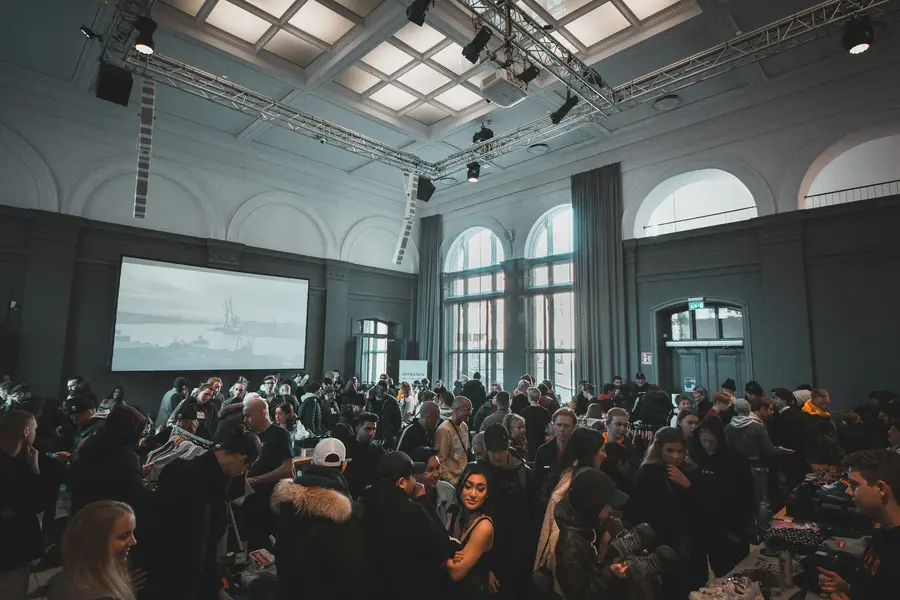

Set-up in the dark
Vans arrive, gazebos go up, and the ground is claimed for the day. This hour is mostly hands and headlights, and it is the part of the market most people never see.
Documentary · Self-commissioned, Great Homer Street · February 2026

Documentary · Photography · Liverpool
Great Homer Street market sets up in the dark and is largely gone by early afternoon. Over six weeks in February we photographed the traders who have worked that ground for decades, arriving before the vans and staying until the last stall came down.
01 / Why this
Markets like Great Homer Street are in a slow transition. Traders who took over a pitch from a parent are now well into their own careers, and the generation behind them is not necessarily coming. We wanted a record of the working day before anything about it changes.
This was self-commissioned, which means no client brief and no deliverables to satisfy. It is the kind of project that keeps the studio sharp: no direction from anyone but the subject, and no second chance on a market day that only happens once.
02 / How we worked
Documentary work lives or dies on access, and access comes from repetition. We went on the same two mornings every week for six weeks, which meant the traders stopped noticing us and started talking to us. Several frames in this series only exist because somebody had got used to seeing us standing there.
Technically it was simple: one body, two lenses, available light, and whatever warmth a February morning in Liverpool offers. We shot in the dark for the first hour and accepted the grain, because clean images were not the point.
03 / The working day
The market has a structure that repeats exactly, which made it possible to plan when to be where without controlling a single thing that happened.
Vans arrive, gazebos go up, and the ground is claimed for the day. This hour is mostly hands and headlights, and it is the part of the market most people never see.
The first customers arrive as it gets light. We moved between pitches rather than staying with one trader, looking for the conversations that happen around a purchase rather than the transaction itself.
By lunchtime the vans are loaded and the street reverts. Photographing the dismantling mattered as much as the trade; it is the half of the market that nobody photographs.
04 / The short film
Ambient sound only: engines, gates, the first customers. The film follows a single market morning from the arrival of the vans to the last stall coming down.
Great Homer Street, Liverpool — February 20263 min 40 sec
05 / From the series
The series is all available light, including the frames shot at ISO that most commercial work would reject. The grain is part of the record: it is what 4am in February actually looked like on that street.

06 / Where this goes
The series is unfinished by design. We are still visiting, and the intention is to keep going for at least a year so the record covers a full cycle of seasons, weather and trade.
Every trader photographed gave written permission, and each one keeps access to their own images. If an exhibition or publication comes out of this, they will be told before anyone else.
Back to the start
A story worth documenting?
Documentary commissions, long-form projects and editorial work.
Start a conversation